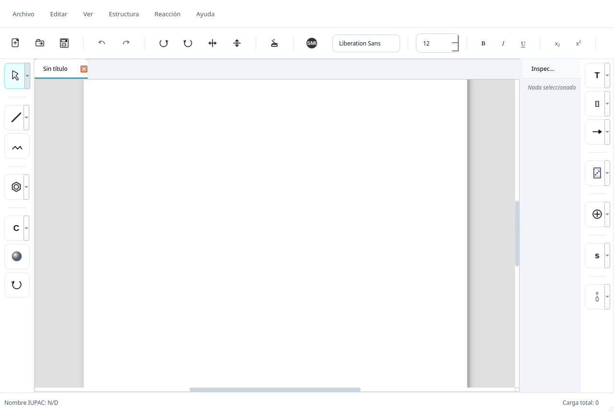

Un objeto, varias representaciones
Del trazo
al grafo
¿Qué ocurre dentro de ChemUSON cuando alguien dibuja una molécula? El dibujo no es el resultado final: es una manera de construir, inspeccionar y transformar una estructura química.
01 · El problema
El dibujo es una interfaz, no la molécula
En un editor químico, un enlace visible debe corresponder a una relación entre átomos; mover un vértice cambia coordenadas, no necesariamente la conectividad. ChemUSON separa esas responsabilidades: un MolGraph guarda átomos, enlaces y estado químico; el canvas de PyQt6 presenta y edita esa información como una escena interactiva.
La separación importa porque el mismo modelo puede alimentar tareas distintas: validar valencias, producir una representación 2D más legible, calcular propiedades, intentar una nomenclatura parcial o exportar una estructura. Cada resultado tiene su propio alcance y sus propios límites.
Idea guía. ChemUSON intenta mantener estable la identidad química mientras cambia la manera de verla. Una figura más ordenada no demuestra por sí sola que la química esté bien interpretada.
En el código: modelo MolGraph · contrato del canvas.
02 · Representación
Del gesto a una estructura consultable
El canvas es un QGraphicsView con una escena gráfica, y conserva una referencia al modelo. Átomos y enlaces son entidades con identificadores y atributos; las coordenadas son parte de su representación. En vez de mostrar todas las capas de golpe, cambia la vista para seguir el mismo fixture en tres etapas.
La geometría de entrada conserva las coordenadas originales del fixture. Explora la figura por átomo o selecciona una etapa.
tests/fixtures/test_clean2d_crude_chemuson.cmsn. La etapa “grafo” enfatiza nodos y aristas, no añade inferencias químicas nuevas.Elige un vértice para consultar los atributos que el modelo calcula o conserva.
¿Qué guarda el modelo para cada átomo?
El modelo de Atom incluye, entre otros campos, elemento, carga, isótopo, radicales, estereoquímica, hidrógenos asignados o implícitos, etiqueta y coordenadas. Los enlaces tienen extremos, orden, estilo y metadatos estereoquímicos. Esta ilustración muestra un subconjunto real del fixture y no todos los campos posibles.
03 · Geometría
Una molécula correcta también puede verse mal
Clean2D trabaja con coordenadas de depiction. Genera candidatos, evalúa restricciones de seguridad y calidad, y elige entre los candidatos aceptados. No cambia la identidad química para conseguir una imagen más ordenada: los contratos documentan invariantes de átomos, enlaces, cargas, aromaticidad, estereoquímica y metadatos relevantes.
generate_clean2d_candidates + ranking sobre el fixture indicado. Ganó internal_templates con estado applied. Los valores son de esta entrada y esta ejecución; no describen una garantía universal de mejora.La evaluación también informa el desplazamiento medio (31.9) y máximo (103.4) en unidades de coordenadas. El informe de este caso pasa sus comprobaciones; eso no significa que todos los candidatos sean aceptables ni que exista un óptimo global.
En la misma ejecución, el candidato block_layout se rechazó por empeorar colisiones (block_layout_empeora_colisiones). Un score estético no compensa una condición de seguridad incumplida.
¿Qué significa “mejor candidato seguro”?
Significa el mejor entre los candidatos que realmente se generaron y superaron los hard gates bajo el modo y presupuesto de recursos usados. No afirma un óptimo matemático o global. Si no hay mejora segura, el comportamiento conservador —preservar o no hacer cambios— es preferible a un redraw destructivo.
generación y ranking de candidatos · evaluación de seguridad · política y contratos de Clean2D.
04 · Análisis
Del modelo a resultados con distintos grados de certeza
Sobre el mismo MolGraph, ChemUSON ofrece cálculos y servicios que no deben confundirse entre sí. La validación de valencias es un diagnóstico del modelo; la fórmula y la masa son cálculos; la nomenclatura tiene cobertura parcial; las señales espectrales son heurísticas.
Conectividad y atributos
20 átomos, 21 enlaces. El grafo conserva la conectividad y los atributos moleculares; esta geometría viene del fixture de regresión.
En el fixture, la validación devuelve 0 problemas de valencia; la fórmula calculada es C20H30 y la masa promedio informada por el módulo de cálculo es 270.4522 u. El motor IUPAC-lite devuelve N/D para esta estructura. Ese resultado es información útil: el motor prefiere degradar con seguridad cuando no puede nombrar un caso.
Las señales que se muestran son predicciones heurísticas, no espectros medidos. Para esta ejecución, el predictor heuristic-v1 reportó confianza global 0.49; la tabla incluye picos estimados asociados a átomos. No uses estos valores para identificar o validar una muestra.
Subconjunto orgánico, MVP y cobertura incompleta; puede responder N/D.
^1H/^13C NMR y MS básicos por predictor heurístico; estimados y de confianza limitada.
Conformación y optimización geométrica con RDKit aislado o Open Babel opcional; exporta entradas para ORCA, Gaussian y NWChem, que se ejecutan fuera de la app.
validación de valencia · cálculos de masa · alcance de ChemName · predictor espectral · 3D y CompChem.
05 · Portabilidad
Guardar no es fotografiar la ventana
Un documento nativo .cmsn conserva tanto el MolGraph —átomos, enlaces y sus atributos— como los datos gráficos del canvas. La capa de persistencia reconstruye la vista al volver a abrirlo. El mismo grafo puede cruzar formatos de intercambio, pero cada formato preserva un subconjunto distinto: no existe una conversión universalmente sin pérdida.
El archivo del proyecto serializa modelo y datos del canvas para poder reconstruir la sesión; no es solo una imagen exportada.
Si el documento está modificado, el autosave periódico corre cada 2 minutos; tras editar también hay un debounce de 8 segundos. Conserva hasta 5 respaldos rotativos. Usa $XDG_CONFIG_HOME/chemuson/autosave o, si no existe esa variable, ~/.chemuson/autosave. Los documentos limpios no generan snapshots periódicos.
El contrato PersistenceDocument permite que el serializador reciba un documento que expone el modelo y las operaciones de datos/vista, sin que el catálogo declare una dependencia formal de ChemIO M01 hacia Canvas M09. También hay una versión de esquema CMSN (0.1.0 en el gestor de persistencia), distinta de la versión de aplicación 0.3.0-dev.
serialización .cmsn · temporizadores y backups · índice de recuperación · matriz de formatos · CML básico.
06 · Arquitectura
Veintitrés módulos, no una lista plana
El catálogo versionado en architecture/modules.yml contiene actualmente 23 módulos, M00–M22. La cifra de 20 módulos M00–M19 que circulaba como contexto ya quedó desactualizada: el catálogo incluye M20, M21 y M22. Selecciona un módulo para ver sus dependencias directas según el catálogo y su responsabilidad.
architecture/modules.yml. Solo se iluminan las dependencias directas del módulo activo; una arista representa relación arquitectónica declarada, no una secuencia temporal de ejecución.La ruta de lectura más corta va de la interfaz a los servicios de dominio: el canvas entrega el grafo al modelo; ChemIO conserva formatos y persistencia; Clean2D produce candidatos de depiction; otros módulos calculan, nombran, predicen o exportan. La GUI orquesta esos servicios, pero no debería absorber su lógica química.
El catálogo también separa servicios de plataforma: M14 gestiona la política de actualización (proveedor, seguridad y rollback); M21 agrupa settings y recursos; M22 documenta recuperación, autosave rotativo y aislamiento de fallos. Están en el catálogo actual, no en la lista de propuestas futuras.
Capas del grafo químico multicapa
El núcleo también construye grafos de interacción, motivos, bloques y restricciones de layout. En el fixture de esta figura, una ejecución real reportó 7 motivos, 5 bloques, 37 aristas de bloque, 25 restricciones de layout y 0 aristas de interacción. Son conteos derivados de ese fixture, no una taxonomía completa del compuesto.
07 · Aislamiento
Por qué una biblioteca nativa no vive en la ventana
RDKit aporta conversiones y tareas químicas útiles, pero combina Python con extensiones nativas. Una incompatibilidad binaria o un fallo nativo puede terminar el proceso, no solo lanzar una excepción Python. ChemUSON expone una ruta aislada para ciertas operaciones sensibles: el proceso de UI intercambia una solicitud acotada con un worker y recibe un resultado o una degradación controlada.
Permanece receptiva y conserva el estado del documento.
Importa RDKit, ejecuta la operación y termina.
La ventana coordina una operación; no carga por defecto el backend nativo en su propio proceso.
chemuson.chemio.rdkit_safe; no es una traza de un proceso capturada en vivo. Si el worker falla, termina por señal o excede el timeout, la ruta puede degradar a un fallback sin tumbar la UI.El aislamiento no significa que todas las funciones usen RDKit ni que cada instalación tenga un backend operativo. El acceso directo está deshabilitado por defecto en la ruta documentada; la disponibilidad depende del entorno. La aplicación conserva alternativas internas para varias operaciones.
08 · Interfaz
Modernizar sin reescribir el editor
La campaña visual decidió permanecer en PyQt6 y reorganizar el acceso a las herramientas. En el estado auditado, la rama ya integra la barra de aplicación, el rail unificado, los paneles laterales en pestañas y una barra de estado refinada. El canvas sigue siendo el editor molecular; la modernización de la superficie no equivale a rehacer su lógica.

foundation-shots; las capturas actuales a visual-convergence/captures. Cambia entre estados con los controles.El panel lateral reutiliza las siete instancias de docks históricas como páginas en pestañas y un menú de overflow, en vez de duplicar sus herramientas. El plan documenta que la siguiente fase prevista es una paleta de comandos con Ctrl+K; en este HEAD sigue siendo trabajo planeado, no una función que este artículo declare terminada.
Qué demuestra esta comparación (y qué no)
Las imágenes evidencian cambios visuales y el estado de composición capturado. No prueban accesibilidad completa, calidad de uso, rendimiento o aprobación visual manual en KDE/Wayland. El OpenSpec de Fase 5 indica explícitamente que la aceptación manual queda pendiente del usuario.
plan de fases · origen de capturas actuales · checklist de Fase 5.
09 · Estado, límites y futuro
Una herramienta en desarrollo, con límites visibles
El checkout auditado informa la versión 0.3.0-dev y el HEAD 02c8ea8 en ui/modernization. No es una afirmación de que exista una release publicada con esa versión. El propio README describe el proyecto como construcción activa.
ChemUSON no se presenta como sustituto validado de software regulatorio, instrumentos experimentales, revisión experta ni paquetes especializados de química computacional. Usa sus resultados como asistencia exploratoria y verifica las decisiones químicas independientemente.
Una secuencia posible de trabajo
- Ahora
Consolidar UI hasta SidePanel en la rama visual y seguir endureciendo los contratos de Clean2D y de los servicios MVP.
- Siguiente en el plan
Fase 6: paleta de comandos Ctrl+K; después polish y QA/release según
docs/ui-modernization/PLAN.md. - Más adelante
Mejorar cobertura y evidencia antes de elevar heurísticas de nomenclatura, espectros o 3D a afirmaciones más fuertes.
Cierre
La química como un hilo de traducciones
El valor de ChemUSON no está en una figura aislada, sino en mantener explícitas las traducciones entre dibujo, grafo, geometría y servicios. La arquitectura hace esa cadena inspeccionable; los estados y límites evitan confundir una estimación con una medición.
Proyecto y autoría
ChemUSON — editor molecular 2D libre y de código abierto.
Pedro Jancarlo Gomez Vega*, José Octavio Juárez Sánchez, Alondra Karolina Montaño Preciado, Ramón Moreno Corral, Felipe Medrano Valenzuela, David Octavio Corona Martínez y Karen L. Ochoa Lara*.
Grupo de Química Supramolecular, Universidad de Sonora. * Autores de correspondencia, según el README del repositorio.
Licencia del proyecto: GNU Affero General Public License v3.0. Repositorio público PJGV333/Chemuson.
Notas de trazabilidad
Fuentes internas y método
Las afirmaciones técnicas de este artículo se contrastaron con el checkout de la rama ui/modernization en HEAD 02c8ea8, observado el 1 de octubre de 2026. Las figuras moleculares usan el fixture de regresión y datos calculados al ejecutar los motores del propio repositorio. Las capturas de interfaz se reutilizan sin alteración desde las carpetas de fase documentadas.
- README.md — capacidades, versión de desarrollo, autores, afiliación, limitaciones y licencia.
- architecture/modules.yml — fuente estructurada de 23 módulos y dependencias actuales.
- docs/architecture.md — límites entre paquetes y entry points.
- docs/modules/ y src/chemuson/core/model.py — modelo y contrato del canvas.
- clean2d/engine.py, clean2d/safety.py, docs/clean2d/CAMPAIGN.md — candidatos, gates, métricas y límites de interpretación.
- docs/chemname.md, spectroscopy/service.py, docs/geometry3d_compchem.md — alcance de nomenclatura, heurísticas y exportación 3D/CompChem.
- docs/rdkit.md y chemio/rdkit_safe.py — aislamiento de RDKit y fallos controlados.
- docs/ui-modernization/PLAN.md, tareas OpenSpec Fase 5 y README de capturas — estado y alcance de la modernización.
- docs/geometry3d_compchem.md y docs/interoperability.md — interoperabilidad, límites y exportadores.
- chemio/persistence.py, resilience/autosave.py y resilience/recovery.py — serialización, frecuencia y recuperación.
- tests/fixtures/test_clean2d_crude_chemuson.cmsn — fixture real usado en las figuras 01–04.
- test_clean2d_engine_candidates.py y test_clean2d_invariants.py — candidatos y restricciones de preservación.
- test_persistence_contract.py y test_spectroscopy_service.py — contratos de persistencia y límites del predictor espectral.
Cómo abrir localmente: desde la raíz del repositorio, ejecuta python3 -m http.server 8000 y visita http://localhost:8000/docs/interactive-article/. Los datos están incluidos como scripts locales; no hay dependencias CDN ni solicitudes a servicios externos.